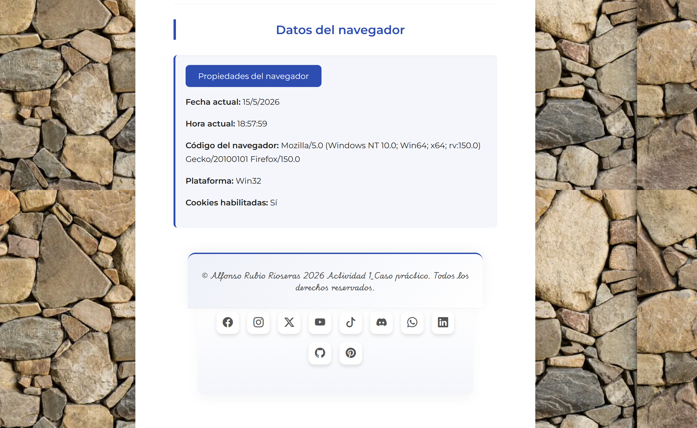

Integración de componentes software en páginas web (MF0951_2)
Programación con lenguajes de guión en páginas web (UF1305)
Unidad Didáctica 5. Gestión de objetos del lenguaje de guión
PREGUNTAS/ACTIVIDADES A REALIZAR
Pregunta 1 Cree un documento html donde se incluirá código JavaScript. En la página web habrá un botón con el texto “Propiedades del navegador”, al pincharlo se abrirá una ventana emergente en la que aparecerá la siguiente información:
a. Que muestre el código del navegador.
b. Que muestre la plataforma sobre la que se está ejecutando el script.
c. Que muestre si tiene o no habilitadas las cookies en el navegador.
d. Agrupe todas los apartados anteriores para que se muestre la información simultáneamente, cree la función “propiedadesNavegador()” e incluya comentarios para explicar lo que hace la función..
e. Muestre la información de los apartados anteriores abriendo la página con el navegador Chrome y Firefox. Realice una captura de pantalla..
Capturas de pantalla de la información del navegador en Chrome

Capturas de pantalla de la información del navegador en Firefox